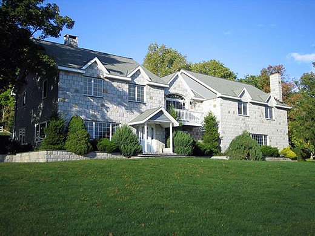
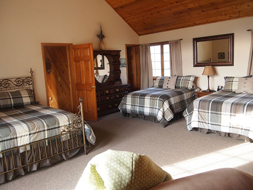
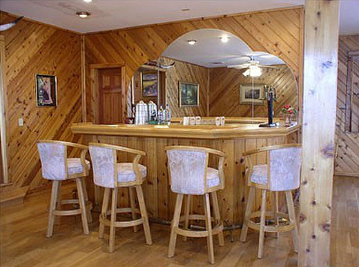

June 10–12th 2016
Jewitt, NY
30 Campers
$200
Offline Camp
We’re taking the Offline First community for a three day retreat in the Catskill Mountains.
We’re developers interested in making our apps work without constant internet connection. We’re designers exploring UX patterns that maintain user understanding of system state. We are all working on problems that very few have worked on before us, and we know it will take a wide range of points of view to solve the big challenges ahead of us.
Join us for an exciting three days away from it all with the Offline First community!

All within one (very) big house
Located in the Catskill Mountains, the camp will mostly take place inside one large house. There will be enough room to roam, relax, find solitude, and, of course, to collaborate.
 Meals are provided
Catering will be provided for omnivore, vegan, and gluten free diets. If you have any food allergies or dietary restrictions, please contact us!
Code of Conduct
All attendees, speakers, sponsors and volunteers at our camp are required to agree with the Offline Camp code of conduct. If you have any questions or suggestions on how we can make Offline Camp more safe and inclusive for campers, please let us know.
Thanks to our Sponsors
- IBM Cloud Data Services
Thanks to our Event Partners
- Hoodie
- Make&Model
- Bocoup